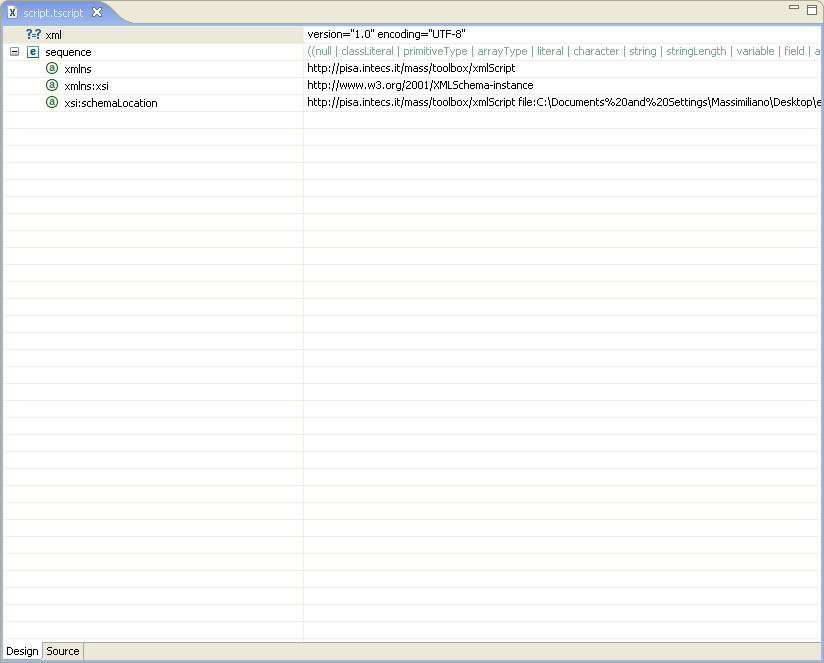
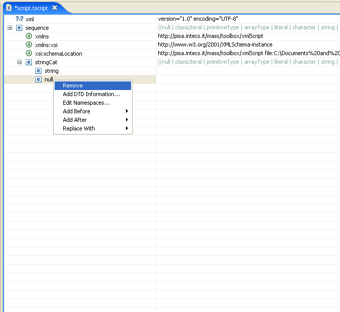

Script files can be modified using a full-featured editor. Clicking on the file name into the Package Explorer, the editor is opened with the selected file. Looking at the picture, it is possible to see that the editor is a multi page editor.

Clicking on the tabs on the bottom of the editor it is possible to switch between graphical and textual view of the code. Each view has some specific features that let the user add and edit tags into the script.
While typing code into the textual editor some feature helps the user in the development. Some features mark errors into the code, while others track changes or show tag scopes. Referring at the picture it is possible to see the tag <string> underlined with a zig-zag red line, highlighting an error (in this case the absence of the closing tag). On the right of the editor a red sign marks the error letting the user have some more information if hovering with the mouse on it. All error information is taken from the validation process.

Some other functionality helps the user during the choice of tags. The two images on the right shows that, on the textual view, tag completion can be done using suggestions coming from the script schema. This feature speeds up the developing time.

Switching from textual to tree view and back while editing the file, it is possible to see that both views are maintained aligned during development.
Like the textual view, the tree view provides some functionality to speed up development, suggesting tags to insert (the picture on the right shows tags suggested for insertion as a child of the <sequence> tag). Functionality for tag substitution, removal and attributes adding are also provided by this view.

Choosing tag adding, schema verification is done online, maintaining the Toolbox script valid by construction. This, if necessary, may require an automatic insertion of all required child nodes or attributes, as exposed by the schema.

Drag & drop and Cut/Paste/Copy functionality are available into the tree and textual view respectively in order to let the user move easily entire pieces of code.

If necessary, specific tags can be removed form the code. If the selected tag has children, those are removed too.
